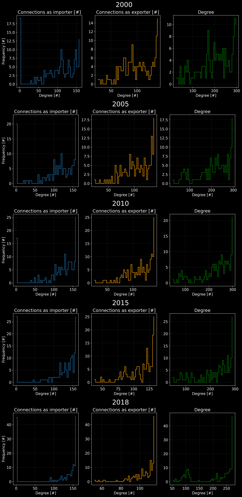
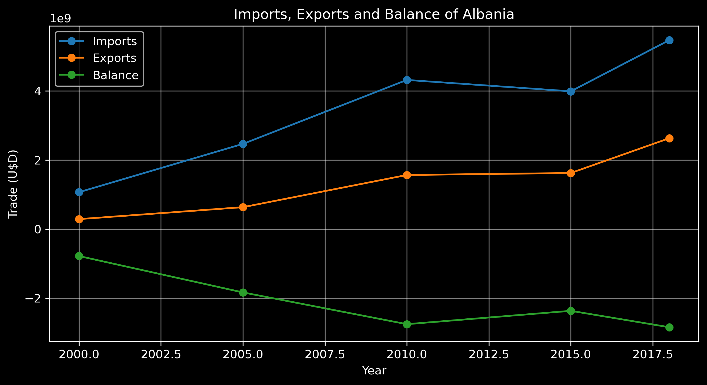
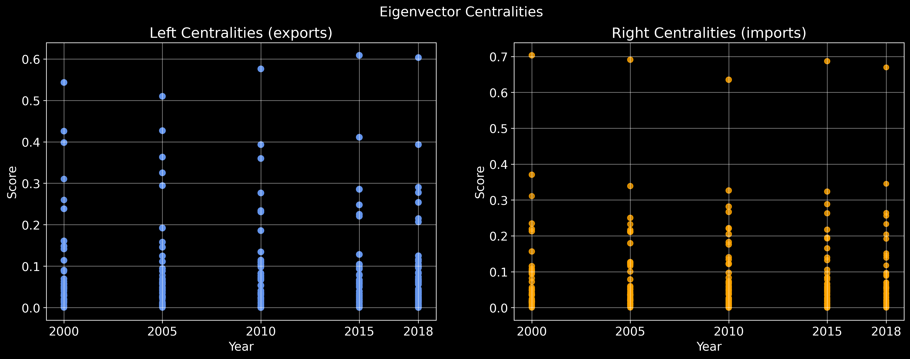
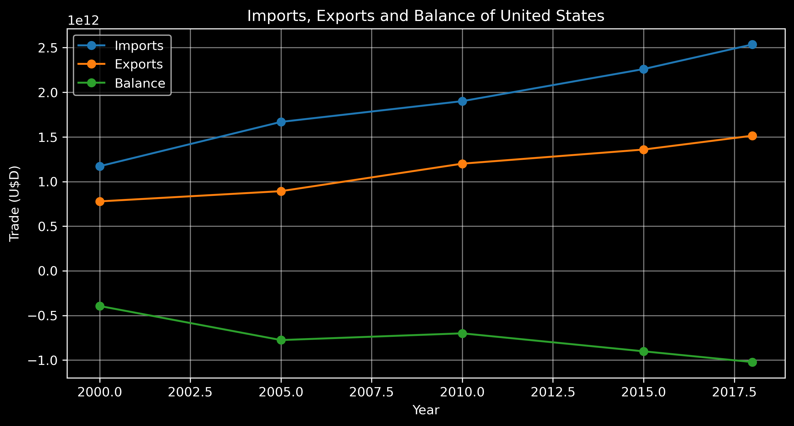
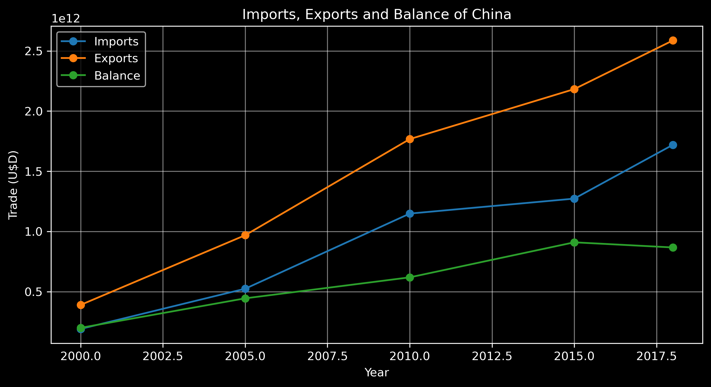
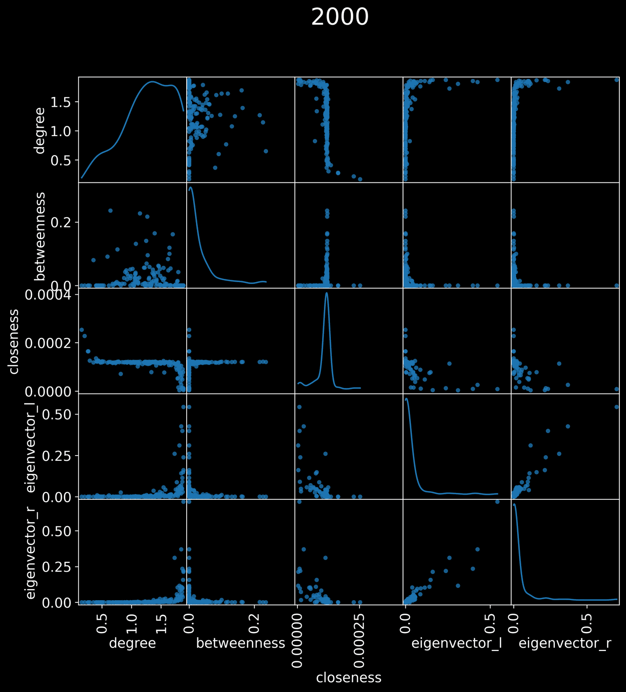
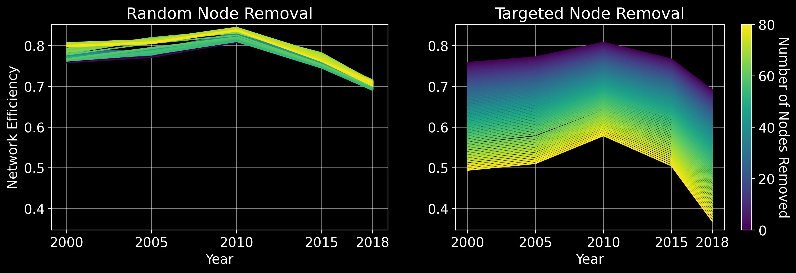

1. Introduction: Trade
Trade. The essence of human civilization. Maybe not the, but definitely an. Ever since a couple of biped hominids decided to swap some of their stuff, we’ve been trading. Long-distance commerce has been around for about 150,000 years! (Watson, 2005) Trade necessarily implied contact between different cultures. The Silk Road for example connected China to the Mediterranean via a 6,400 km long road that was used for trade for over 1,000 years (Silk Road, n.d.). Material goods weren’t the only thing that travelled this ancient highway: ideas, religions, and diseases also found their way across the Eurasian continent.
 The asian section of the Silk Road
The asian section of the Silk Road
At the time one of the most important trade networks, the Silk Road is modest compared to the globalized version of our times. Up until recently, there were very hard limiting factors to trading. It wasn’t just the speed of transportation; there were also communication barriers, the preservation of goods on long journeys, and even currency mismatches which complicated trade. There was a different pace back then. Eventually, the world went and got itself into a big damn hurry. Shipping stuff over the ocean is pretty much a given now. Communication is instantaneous. Goods are preserved for months in refrigerated containers. And we have a global currency; if money is the true language of the world, then the good ole’ American dollar is the lingua franca.
I don’t want to make this post about the history of trade. The reason behind this little incursion is that I came across a dataset on Kaggle which compiled information about the world’s trade network over the last two decades. Essentially, this is a practice dataset for network analysis and data visualization. Over the course of this post, I’ll show some code snippets and visualizations that I’ve made using this dataset. I’ll also try to explain some of the concepts that I’ve used, and hopefully this will be useful to someone.
2. The dataset
The dataset is simple: it shows the imports and exports between 161 countries in the years 2000, 2005, 2010, 2015 and 2018. This information is provided as directed, weighted networks for each year, with nodes being countries, edge direction representing importing and exporting, and edge weights representing the total annual value (in U$D) of those imports and exports. The dataset can be found here. According to the author, the data was compiled from the UN Comtrade database, which is a comprehensive database of international trade statistics. I’m tempted to try using this database directly, since it is much richer in information than the Kaggle dataset, but for now I’ll focus on the latter.
2.1. Datafile format
The files (five in total, one for each year), are pajek .net files. This is a common format for representing network data, and supported by most network analysis software. In the following block, we can see some of the entries in the file for the year 2000:
*Vertices 161
1 "AGO" 0.5496 0.4378 0.5000
2 "ALB" 0.5560 0.7286 0.5000
3 "ARE" 0.6496 0.6301 0.5000
. ... ... ... ...
159 "ZAF" 0.5637 0.3302 0.5000
160 "ZMB" 0.5774 0.4270 0.5000
161 "ZWE" 0.5810 0.3944 0.5000
*Arcs
2 3 1197.070000000
2 4 162.552000000
2 5 147.911000000
2 7 776.949000000
. . ...
160 158 6.090000000
160 159 494256
160 161 68583.900000000
The first line of the file indicates the number of vertices (or nodes) that the network has, along with node names and attributes. In this specific case, names are given by the country’s ISO 3166-1 alpha-3 code. The attributes are not actually related to the countries themselves, but rather are given in the Pajek standard as a way to export to a PostScript description. The first two columns contain $x$ and $y$ positions, in the range $[0, 1)$. The third column is used as an index to specify shape/color to draw that specific node. The author of the dataset has apparently plotted the nodes according to longitude and latitude coordinates, so in a way the attributes actually are related to the countries. The third column, the shape attribute, is always set to 0.5, and we can ignore it.
After the vertices section, the *Arcs section indicates the start of the edges. Each line represents an edge, with the first two numbers being the source and target nodes, and the third number being the weight of the edge. The weights are given in kiloU$D (i.e. just multiply the value by 1000), and are the total value of imports between the two countries (in a certain direction) in the given year. Since this is a directed edge, the information is read as: source country (first node) imports $w$ (weight) kilodollars from target country (second node). For example, the first line in the above block indicates that Albania (node 2) imported $1,197,070 worth of goods from the United Arab Emirates (node 3) in 2000.
2.2. Loading the data
We’re going to be working with networkX, which as the website says:
is a Python package for the creation, manipulation, and study of the structure, dynamics, and functions of complex networks.
networkX is very nice to work with, although it does have certain limitations on the size of the networks it can efficiently handle. Since our network is composed of merely 161 nodes (in the world of complex networks, this is quite small), the library should be able to handle it just fine. An interesting aspect about this particular network is that it is dense, in the sense that most of the possible connections between nodes actually exist, since countries tend to trade with almost every other country.
Anyways, we can use networkX to import the data from a Pajek file, as such:
import networkx as nx
G = nx.read_pajek(filename)Let’s see how this works in practice. We’ll start by importing the data for the year 2000. We’ll also drop the x, y and shape attributes, since we won’t be using them. Finally, some information is retrieved about the graph, and the attributes of the Albania node are printed. The code is as follows:
import networkx as nx
dataset_dir = '../dataset/'
G = nx.read_pajek(dataset_dir+'2000.net')
# drop the 'x', 'y' and 'shape' attrs
for node in G.nodes:
G.nodes[node].pop('x'); G.nodes[node].pop('y'); G.nodes[node].pop('shape')
print(nx.info(G))
print("Attributes of Albania node:", G.nodes['ALB'])which outputs:
MultiDiGraph with 161 nodes and 16335 edges
Attributes of Albania node: {'id': '2'}
Let’s see some of the edges of the Albania node, and while we’re at it, get the total imports of Albania in 2000:
albania_imports = 0
for ie, e in enumerate(G_2000['ALB']):
print(e, G_2000['ALB'][e])
albania_imports += G_2000['ALB'][e][0]['weight'] #print using scientific notation
print(f"Total imports of Albania in 2000: {albania_imports*1000:.2e} U$D")Output:
ARE {0: {'weight': 1197.07}}
ARG {0: {'weight': 162.552}}
ARM {0: {'weight': 147.911}}
AUS {0: {'weight': 776.949}}
AUT {0: {'weight': 11840.4}}
...
UKR {0: {'weight': 3169.35}}
USA {0: {'weight': 15947.3}}
ZAF {0: {'weight': 0.894}}
Total imports of Albania in 2000: 1.07e+09 U$D
So, Albania imported just over a billion dollars worth of goods in the first year of this millennium.
All right, so having familiarized ourselves with how the data is structured and loaded, let’s move on to building some tools to analyze the data. To avoid confusion, I’ll now clarify that I am making auxiliary functions in some .py files, as a sort of module to help me with the analysis. I’ll be importing these functions in the notebook, and using them to analyze the data.
3. Analysis
In this section, we will do some analysis on the network through the years, including degree distributions, centrality measures, and some other interesting things. In the figure below, we can see the network in 2010 plotted. Due to the high density of edges, this part is a bit of a mess. However, the node positions, sizes and colors are indicative of the degrees of the nodes and their centrality in the network.
 The trade network in 2010. Node size: degree. Node color: eigenvector centrality
The trade network in 2010. Node size: degree. Node color: eigenvector centrality
3.1. Degree distributions
A good first step in any network analysis is checking out the degree distribution. It can give us insight into the structure of the network. In the figure below, we can see the in-degree, out-degree and total degree distributions of the network across the years. The in-degree distribution only counts the number of edges that point to a node, the out-degree distribution only counts the number of edges that point out of a node, and the total degree distribution is the sum of the in-degree and out-degree distributions. In our case, out-degree indicates the number of countries that import from a given country, while in-degree indicates the number of countries that a given country imports from (a bit confusing to have the orders switched, but it is the way the data is structured).
Something that stands out at first is that in the case of the import distribution, there are several cases of countries having out-degree 0. This is due to missing data. For example, in the dataset for the year 2000, Angola (country code AGO, id 1) is not present as a source node in the *Arcs section. I find it highly unlikely that Angola did not import anything in that year, and it is much more likely that this data is missing for some reason. Interestingly, the number of countries with out-degree 0 decreases in the following years, but then increases again in 2015 and 2018.
As to the structure of the networks, the distributions show that the networks are quite dense, with most of the nodes having a high degree. This is expected, as commented previously, due to the fact that countries tend to trade with almost every other country.
 In-degree, out-degree and total degree distributions across the years
3.2. Total imports and exports
Let’s define a function to get the total imports and exports of a country in a given year. While in the last section we obtained the imports by summing over the list of edges form a given country, there is a more concise way to do it which is also inline with network analysis: using the adajacency matrix. It is easy to see that the adjacency matrix of our network (in a given year) is given by
\[A_{ij} = \cases{\text{imports from j to i} & if $i \neq j$\\ 0 & otherwise}\]Therefore, it is also quite simple to reach the conclusion that the total imports of a country $i$ in a given year is given by the sum of the $i$-th row of the adjacency matrix, and the total exports of a country $i$ in a given year is given by the sum of the $i$-th column of the adjacency matrix, i.e.:
\[\text{imports of } i = \sum_{j=1}^n A_{ij} \quad \text{and} \quad \text{exports of } i = \sum_{j=1}^n A_{ji}\]The adjacency matrix can be obtained using nx.adjacency_matrix, which returns a SciPy sparse matrix. This code snippet shows how to get the imports and exports of a country:
def imports_exports(G, country):
A = nx.adjacency_matrix(G)
id = int(G.nodes[country]['id'])-1 # the ids start at 1, but we need 0-indexing
imports = np.sum(A[id, :]) # sum over the row
exports = np.sum(A[:, id]) # sum over the column
return imports, exportsNice and easy. Let’s go ahead an pull up data from all the years in the dataset, and plot the imports and exports of Albania over time. I’ll start to include less code now and just show the results, since this is pretty straightforward. In the figure below, the imports are shown in blue, and the exports in orange. Notice the y-axis is in scientific notation, with the scale being $1\text{e}9$, which means that the values are in billions of dollars. We can see that Albania’s imports and exports have tended to increase over time, with the imports being consistently higher than the exports. The trade balance, which is the difference between imports and exports, is being shown in green, and since in all cases imports are higher than exports, the balance is always negative: a deficit.
 Imports/Exports/Balance of Albania from 2000 to 2018
The implications of having a trade deficit (in contrast with a trade surplus) are not trivial. One would assume, at first glance, that a country that imports more than it exports is doing badly economically, but since the economy is so mucho more complicated than that, this is not necessarily the case. This article from Investopedia goes into the pros and cons of having a trade deficit, and I recommend reading it if you’re interested in the topic. Something interesting that the article mentions is that, broadly, smaller countries with a trade deficit are in more danger of foreign meddling in the economy. Which I think sort of makes sense. The US, for example, has had a consistent trade deficit since 1976, and yet it is still the world’s largest economy, dominating the global economy in many ways, since it’s size and power makes it less prone to foreign meddling.
3.3. Centrality measures
I want to now move on to a more network oriented analysis. We’ll start by looking at the centrality measures of the countries in the network. The centrality measures are a set of metrics that are used to quantify, broadly speaking, the importance of a node in a network. There are many different centrality measures, but the most common ones are degree centrality, closeness centrality, betweenness centrality, and eigenvector centrality. In a nutshell, they focus on:
- Degree centrality: A measure of the number of connections a node has in comparison to other nodes in the network. If a node has many connections in comparison to other nodes, it is intuitively more important than a node with few connections.
- Closeness centrality: A measure of how close a node is to all other nodes in the network. “Close” here refers to the shortest path between nodes. If a node is reachable from all other nodes in the network with a short path, it is probably more important than a node that is not.
- Betweenness centrality: A measure of how many shortest paths between nodes in the network go through a given node. This measure is interesting, because it can be used to identify nodes that are “bridges” between different parts of the network.
- Eigenvector centrality: A measure of the importance of a node in the network, based on the importance of the nodes it is connected to. This is a more complex measure, related to the eigenvectors of the adjacency matrix of the network.
The first three measures are pretty straightforward, but the last one is a bit confusing, I think. What exactly is the “importance” of a node? How do we define the importance if it is recursively dependent on the importance of other nodes? First, let’s consider defining this relationship mathematically. We define a vector $\vec{x}$, in which $x_i \in \mathbb{R}$ is this mystical importance of node $i$. We do not know the values of this vector yet. Next, we consider this sort of recursive relationship:
\[x_i = \frac{1}{\lambda} \sum_{j=1}^n A_{ij} x_j\]where $A$ is the adjacency matrix of the network and $\lambda$ is an (apparently) arbitrary constant. This equation is simply stating
The importance of node $i$ is the sum of the importance of all the nodes that are connected to it, weighted by the corresponding edge weights.
I think it is quite simple and makes a lot of sense to define this measure like this. The only thing that is not clear is how to actually calculate the values of the vector $\vec{x}$. And how to choose a value for $\lambda$. Let’s rewrite the equation above in matrix form:
\[\vec{x} = \frac{1}{\lambda} \mathbf{A} \vec{x}\]and then
\[\lambda \vec{x} = \mathbf{A} \vec{x}\]and any one who has taken a linear algebra course will recognize this as an eigenvector problem! This means that the only solutions that satisfy our definition of importance are the eigenvectors of the adjacency matrix. The question is, which eigenvector do we choose? For an $n \times n$ matrix, there are $n$ eigenvectors, and we need to choose one. The Perron-Frobenius theorem comes to the rescue here. This theorem states that for a square matrix $\mathbf{A}$ with all entries non-negative, the largest eigenvalue of $\mathbf{A}$ is real and positive, and the corresponding eigenvector is non-negative, while all other eigenvectors will have negative entries. This means that we can simply choose the eigenvector corresponding to the largest eigenvalue, which is called the leading eigenvector, and we will have a solution to our problem.
Now, the attentive reader will have noticed that as we have defined this measure, the importance of a node is being built by considering the importance of node that point towards it. We are indeed considering, for a node $i$, a sum of the $i$-th row of $\mathbf{A}$. What if we want to consider the importance of a node based on the importance of the nodes that it points to? It does not take much to convince oneself that this implies defining our measure based on the columns, in which case it is quite simple to see that this equates to solving a left eigenvector problem:
\[\lambda \vec{y} = \vec{y} \mathbf{A}\]where $\vec{y}$ is a row vector. In the previous equation, we had what is called a right eigenvector problem. For symmetric matrices, which would be the case of the adjacency matrix of an undirected network, the left and right eigenvectors are the same. However, for our network, the adjacency matrix is not symmetric, so we have to consider both left and right eigenvectors. For more information on this subject as regards to network science, I recommend checking out Newman’s book (Newman, 2018, chap. 7).
We can then summarize the two measures as follows:
- Eigenvector centrality (right): The importance of a node is the sum of the importance of all the nodes that point to it, weighted by the corresponding edge weights. In the context of our trade network, it is roughly the importer importance.
- Eigenvector centrality (left): The importance of a node is the sum of the importance of all the nodes that it points to, weighted by the corresponding edge weights. In the context of our trade network, it is roughly the exporter importance.
All right! Having some intuition and formalism out of the way, let’s see some results. networkX has a function called nx.eigenvector_centralities that does all the heavy lifting for us. We can specify whether we want to calculate the left or right eigenvector centrality, and we can also specify whether we want to use the wieghted or unweighted adjacency matrix. Since we want to include the weights of the edges, we will use the weighted adjacency matrix. In the figure below, the eigenvector centralities of each country are plotted for each year.
 Eigenvector Centralities over the years
We can clearly see that a few countries have high centralities (in both cases), while most countries are concentrated at a lower score. Interestingly, in the case of right centralities, which are related to importance as regards to imports, there is a singular country across the entire time period that has a high centrality. Let’s get the highest scores to find out which countries are leading the pack.
| 2000 | 2005 | 2010 | 2015 | 2018 | . | 2000 | 2005 | 2010 | 2015 | 2018 |
|---|---|---|---|---|---|---|---|---|---|---|
| USA | CHN | CHN | CHN | CHN | . | USA | USA | USA | USA | USA |
| CAN | USA | USA | USA | USA | . | CAN | CAN | CHN | CHN | CHN |
| JPN | JPN | JPN | DEU | JPN | . | MEX | DEU | CAN | CAN | CAN |
| CHN | CAN | DEU | JPN | DEU | . | JPN | MEX | DEU | MEX | MEX |
| MEX | DEU | CAN | KOR | KOR | . | DEU | JPN | MEX | DEU | DEU |
| DEU | KOR | KOR | CAN | MEX | . | GBR | GBR | JPN | JPN | JPN |
| GBR | MEX | MEX | MEX | CAN | . | FRA | CHN | GBR | HKG | HKG |
| FRA | FRA | FRA | FRA | FRA | . | CHN | FRA | HKG | GBR | GBR |
| KOR | GBR | AUS | ITA | AUS | . | KOR | HKG | FRA | FRA | KOR |
| ITA | ITA | GBR | GBR | ITA | . | HKG | BEL | KOR | KOR | FRA |
Top 10 countries by eigenvector centrality. Exports on left, imports on right.
Both lists contain countries which I don’t find surprising. They tend to be larger and historically economically powerful countries. The most important importer, as seen on the right, is the USA. This is across all years. One takeaway from this result is that the USA seems to consume a large amount of products from a variety of trade partners, which is in line with the consumerism associated to this country. It is quite surprising that it’s right centrality score is so much higher than the rest.
 Imports/Exports/Balance of the USA from 2000 to 2018
Another interesting country we can focus on is China. Between 2000 and 2005, it climbed from the 4th position to 1st in terms of left centrality (exporter importance). It has stayed on top of the leader board for the rest of the time period. As to the right centrality, we can see China climb from 8th and 7th in 2000 and 2005 to 2nd place for the rest of the time period. Basing ourselves on these results alone, we can conclude that in the last two decades, China not only amped up its exporter status, but also improved it’s economy to the point where it is able to import a large amount of products from other countries. One needs not look too far to see the economic powerhouse that China has become in the last few decades. A quick skim of the Wikipedia page on China’s economy will show a long list of economic achievements. The figure below also shows the trade balance of China from 2000 to 2018. The growth in both imports and exports is quite large, and exports have been consistently higher than imports, indicating a trade surplus.
 Imports/Exports/Balance of China from 2000 to 2018
As for the rest of the centralities, I thought a scatter matrix of all the measures would be a good way to visualize them. The figure below is a GIF that shows the scatter matrix for each year. The diagonal shows the distribution of each centrality, while the off-diagonal shows the scatter plot of each pair of centralities. Some notable trends are the tendency for closeness to decrease across the years (due to the network becoming more connected), and the tendency for betweeness to become more clustered in relation to degree centrality. In the latter case, we can see for example in the year 2018 two main clusters: one for lower degree centrality, in which the betweeness is very low, and another for higher degree centrality, in which the betweeness is higher. I dare to say that this implies that lower degree countries, which are probably more marginalized countries in the world economy, are being even more left out of the main pathways of economic activity.

Centralities Scatter Matrix
4. Network attacks
In this section I’m going the explore the impact of a network attack on the overall functioning of the network. Suppose in this global economy, a country is left economically isolated, due to any number of reasons. How would this affect the rest of the network? I’m going to explore this question by removing nodes from the network and observing the impact on the rest of the network. I’ll focus on two ways to do this: random removals, and targeted removals. The targeted case is done by taking out the node with highest degree.
As to how to evaluate the impact of the attack, I’ll use a measure called network efficiency, which broadly measures the capacity of the network to quickly transfer information. This is based on the shortest path between nodes. I think it is a decent measure for a trade network, because it can be interpreted as the capacity of the network to quickly transfer goods. The efficiency for an unweighted network is defined as:
\[E(G) = \frac{1}{N(N-1)} \sum_{i \neq j} \frac{1}{d(i,j)}\]where $N$ is the number of nodes, and $d(i,j)$ is the shortest path between nodes $i$ and $j$. I am using the unweighted representation of our networks because in this case, the weight of the edges is not indicative of a distance measure. A good test would be to apply a weighted version of this measure (which exist), using the inverse of the weights, since a high trade volume can be interpreted as a “short” economic distance between countries, allowing that trade to be more efficient in distributing goods.
Anyways, the figure below shows the impact on the unweighted global efficiency of the network across the years, for different number of nodes removed. The left figure shows random node removals, while the right figure shows targeted removals, where each node removed is the current highest degree node in the network. A total of 80 nodes were removed in each case, as indicated by the colormap. In the case of the targeted attack, the efficiency consistently takes a hit with each node removed. As for the random attack, the efficiency actually improves as nodes are removed. This makes some sense, because if more marginal nodes are removed, the network actually becomes more connected, and therefore more efficient.
As to the general efficiency across the years, it is interesting that 2010 is consistently the most efficient version of this network. There is a pretty steep decline in 2015 and 2018. I’m not sure what to make of this. It could be indicative of some economic regressions across the globe, or simply an artefact of missing data.
 Node removal impact on network efficiency
5. Conclusions
In this post, we explored the trade network of the world, and how it changes over time. It was found that the network is highly connected, with a small number of countries dominating the trade, identifiable for example by their eigenvector centralities. The network has also evolved over the years, with centrality measures indicating that the network has tended to be more connected, although perhaps some countries are being circumvented in trade routes, as indicating by the decrease in betweenness centrality dispersion towards a more clustered distribution. As for the network attack analysis, we found, not surprisingly, that targeted attacks in which high degree nodes are removed impact the efficiency negatively. On the other hand, random node removals actually improved the efficiency of the network, although this is of course not a result that can be interpreted as “take out some countries out of the world economy, and the rest will do better”.
This has been a relatively simply and short analysis of a network with not too many attributes. A more thorough analysis is definitely possible, including for example some dynamic simulations of trade flows. Also, utilizing more information from the UN Comtrade dataset would be interesting, such as types of goods traded, and their values. This would naturally paint a more complex, and hopefully accurate, picture of the intricacies of the world trade network.
References
Economy
- Watson, P. (2005). Ideas: A History of Thought and Invention from Fire to Freud. HarperCollins Publishers.
- The Editors of Encyclopaedia Britannica. (n.d.). Silk Road. Encyclopaedia Britannica. https://www.britannica.com/topic/Silk-Road-trade-route
Network Science
- Newman, M. (2018). Networks. OUP Oxford.